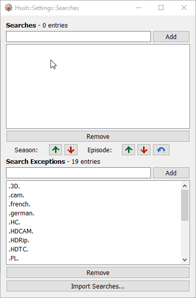
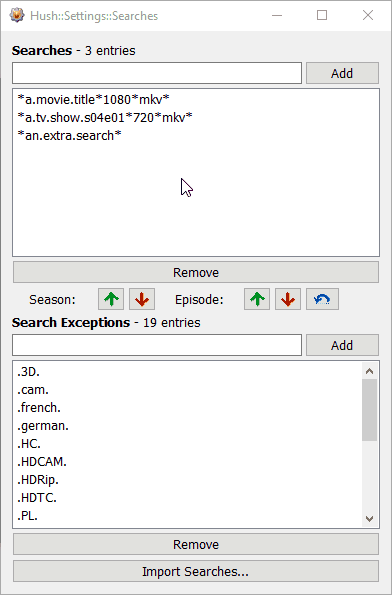
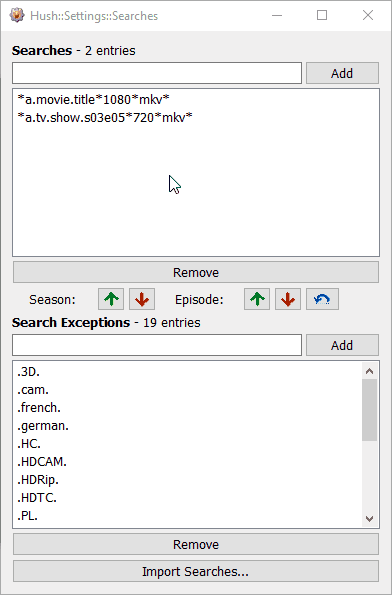

Hush Help::Searches
Searches are search queries that are used to tell Hush what we want to find. Searches are specifically used for Hush's passive searching system. A passive search occurs in the background at intervals.
Searches are very useful for grabbing weekly TV episodes as they release. Searches are not case sensitive and support wildcard characters. * will match any number of any character, and ? will match any single character.
Setting Passive Searches
To modify your passive search queries:
- Open the main Hush window by clicking the Hush button on the toolbar in KVIrc (or press Ctrl+Alt+H)
- Click the Searches button
To add a search:
- Click inside the text input box and type in something to look for. This can include wildcard characters * and ? but is not a regular expression.
- Click the Add button or press Enter to save the search to the searches list

To remove a search:
- Click to highlight searches to be removed in the search list (you can highlight multiple items at the same time)
- Click the Remove button or press Delete or press Backspace to remove the search from the searches list

- Close the Searches window
Altering Searches
To adjust the season or episode values of your existing searches:
- Open the main Hush window by clicking the Hush button on the toolbar in KVIrc (or press Ctrl+Alt+H)
- Click the Searches button
- Click to highlight searches to be altered in the search list (you can highlight multiple items at the same time)
- Click any of the Season or Episode "Up" and "Down" or Episode "Reset" buttons to increase or decrease either the season or episode value or to set the episode value back to 01 in the highlighted search items. If a search item does not contain the sXXeXX format, it will not be altered.

- Close the Searches window
Note that the search alter buttons will only affect searches with S00E00 (where 00 can be any number) in them. If a search does not have this string in it, the search will remain unaltered.